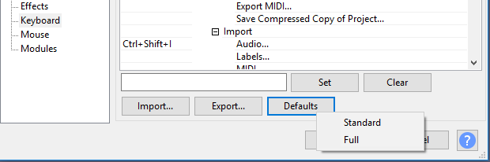

Only in full set
From Audacity Development Manual
When you see a shortcut labelled like Ctrl + J Extra i.e. with the word 'Extra' as a superscript, it means that the shortcut is only available if you choose the full set of shortcuts. The standard default set of shortcuts does not include it
- Defaults: There are two sets of default shortcuts available in Audacity. The default set is "Standard". This set is a reduced set to simplify the set of shortcuts somewhat and to provide greater flexibilty for users who wish to create their own shortcuts.
- The other available set of shortcuts is "Full". This set is, as the name suggests the full and extensive set of shortcuts that were available in Audacity 2.1.3 and earlier. You can choose to revert to the full set of shortcuts by selecting "Full" from the dropdown menu accessed from the button in the Keyboard Preferences dialog.
- 
- You can use the button to switch between the two provided default sets of shortcuts at any time.
- This button is also handy if you are making custom shortcuts and decide you have not got your changes right and want to start over again.